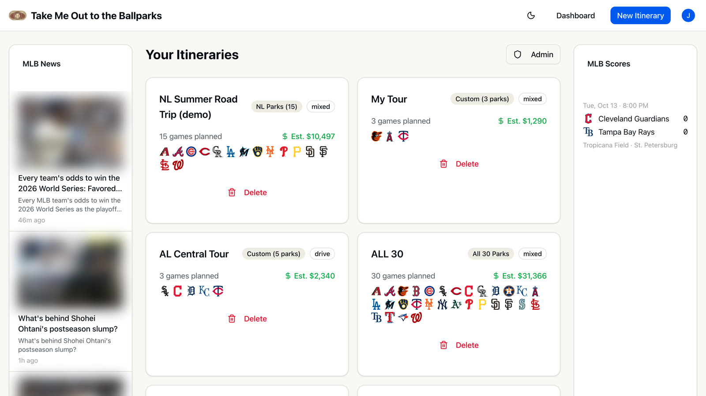
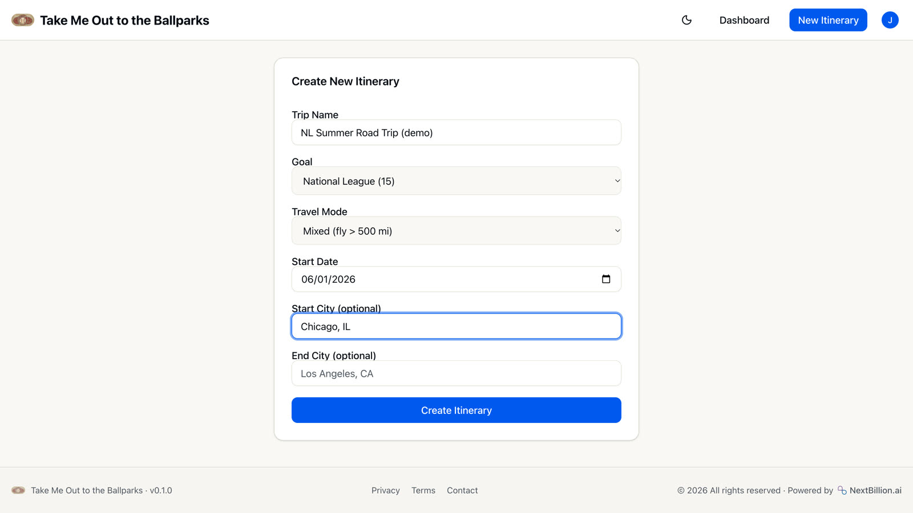
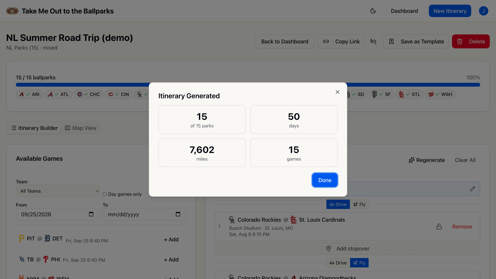
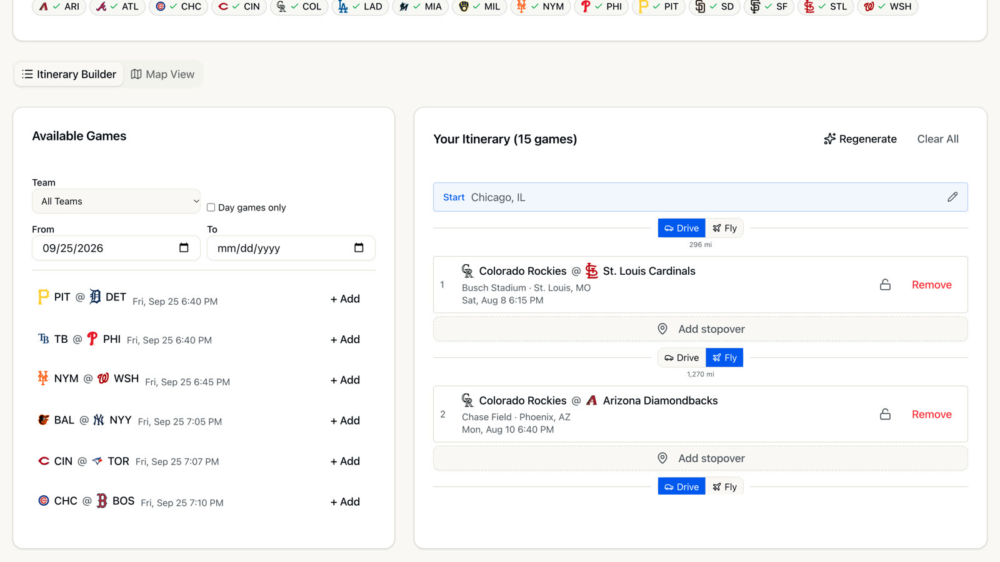
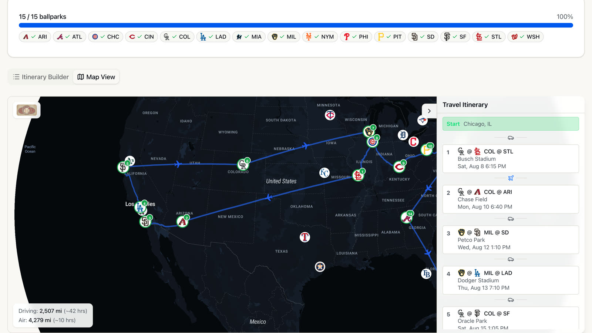
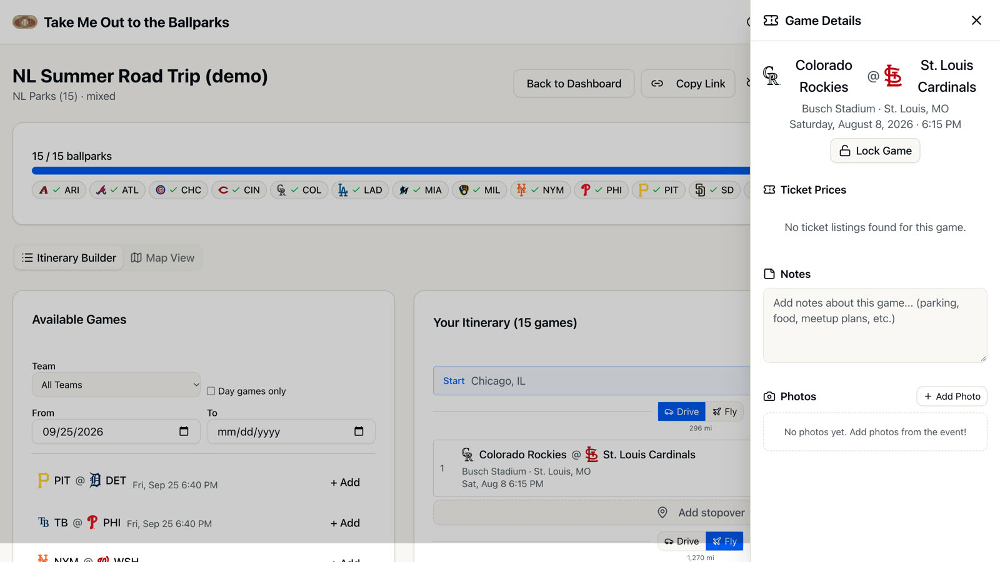
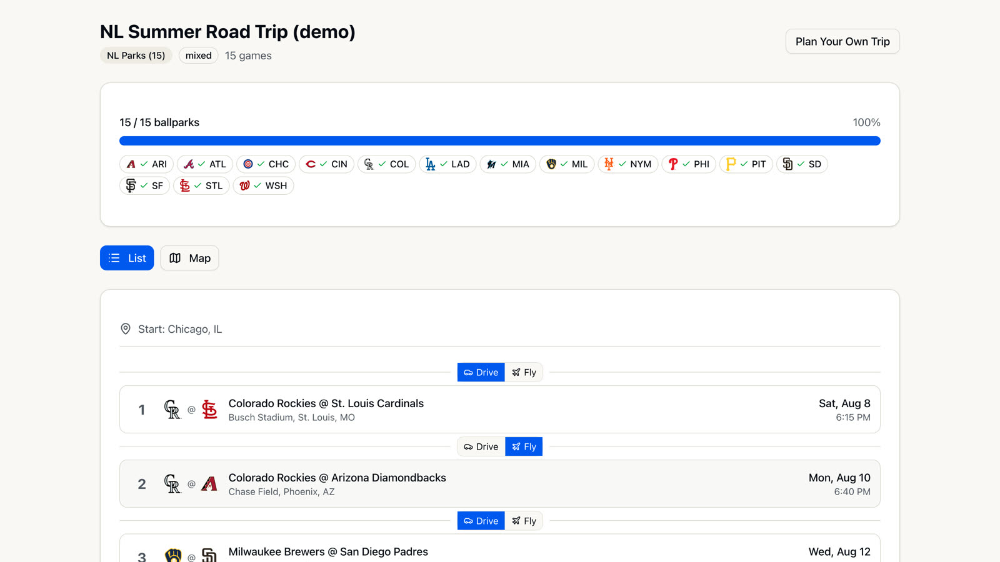
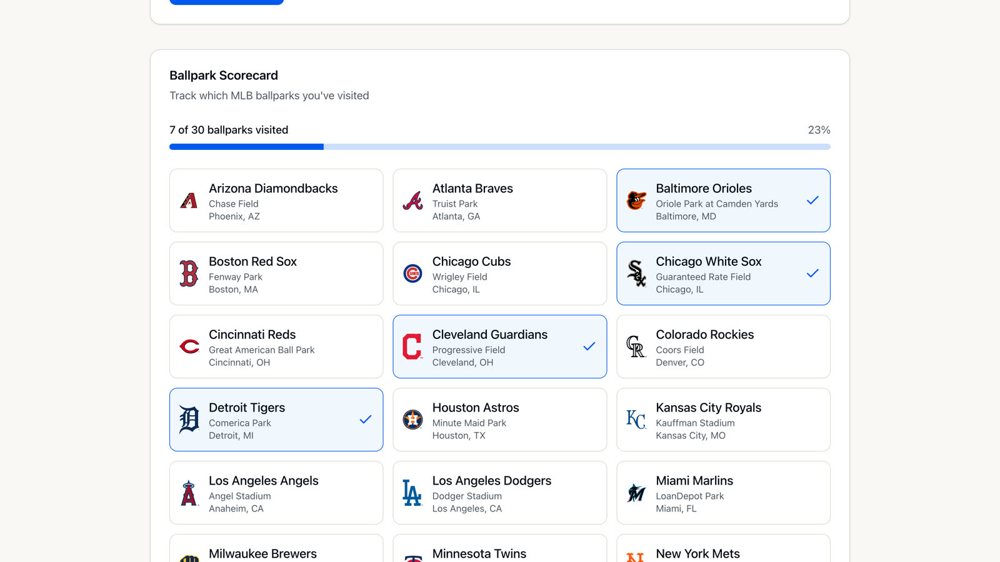
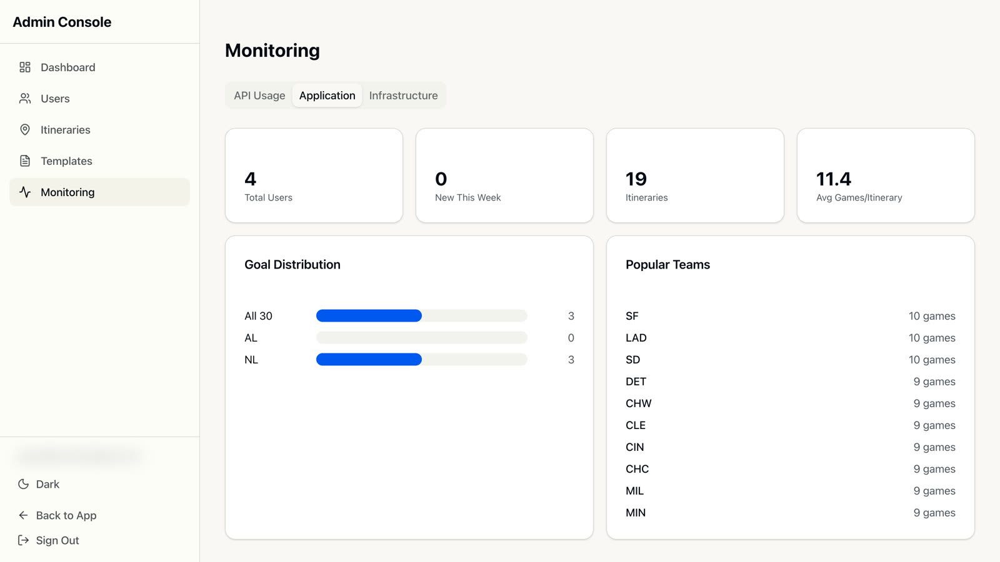

Thirty ballparks. One road trip.
Pick the parks you want to see. Take Me Out to the Ballparks finds games on the MLB schedule, orders them into a route you can actually drive or fly, and puts the whole trip on a map you can share.
80 seconds on the live app: a National League road trip from Chicago, start to finish.
How it works
From "all 15 NL parks" to a day-by-day plan.
Four steps. The planner does the scheduling; you make the calls.
Pick a goal
All 30 ballparks, the American or National League, or your own list of teams. Choose drive, fly, or mixed.
Auto-generate
One click finds a game at every park and orders them into an optimized route through the season.
Make it yours
Swap, lock or reorder games, add stopovers, and set drive or fly for each leg.
Map and share
See every route and flight on the map, then send the plan with a link.
Trips
Every trip in one place.
The dashboard lists your itineraries with their goal, travel mode, games and the teams you'll see, plus an estimated trip cost on every card. MLB news and live scores sit alongside.
- Cost estimates include driving, flights, hotels, tickets and parking
- New accounts start with example trips to explore

New trip
Pick a goal and how you travel.
Name the trip, pick a goal, choose how you'll travel and when you start. Start and end cities are optional, with place search as you type.
- Goals: all 30 parks, AL (15), NL (15) or a custom team list
- Travel: drive, fly, or mixed (flies legs over 500 miles)

Auto-generate
One click plans the route.
Auto-generate picks one game at every park on your list and orders them with NextBillion.ai route optimization, respecting game dates and any games you've locked. Regenerate any time for a fresh plan.
NL goal from Chicago: 15 of 15 parks in 50 days
Builder
Drive or fly, leg by leg.
Your itinerary sits next to the full schedule. Filter available games by team, dates or day games only, and add the ones you want. Every leg shows its distance and a drive/fly switch.
- Drag to reorder; lock a game so regenerate keeps it
- Stopovers between any two games
- Suggested next games, ranked by distance

Map
The whole trip on one map.
Map View draws driving routes on a NextBillion.ai basemap and flights as arcs with small plane markers, numbered in trip order next to a travel itinerary panel. Totals show the driving and flying split.
2,507 mi driving (~42 h) · 4,279 mi flying (~10 h)
Game day
Notes and photos for every game.
Open any game for its ballpark, date and first pitch. Keep notes (parking, food, who you're meeting), upload photos from the day, and lock the game in place. Ticket prices come from SeatGeek when there are listings.

Share
Send the plan with one link.
Share creates a public link to a read-only view of the trip, with the list and the map. Whoever opens it doesn't need an account. Turn the link off whenever you like.

Scorecard
Track the parks you've visited.
The profile keeps a ballpark scorecard of every park you've been to, separate from your trips. It also handles your account: password changes and self-service account deletion.

Admin
A console for running the site.
Admins get a separate console with users, all itineraries, and templates: example trips seeded into every new account. Any trip can be saved as a template.
- Monitoring: calls, response times and errors per external API
- Usage stats: goals, popular teams, games per trip
- Service details for the Cloud Run deployment

Under the hood
Built with
| App | Next.js 16 (App Router), React 19, TypeScript, Tailwind CSS, shadcn/ui |
|---|---|
| Routing and maps | NextBillion.ai route optimization, directions, place search and map tiles; MapLibre GL |
| Data | Supabase (PostgreSQL and photo storage), with the full MLB season schedule |
| Accounts | NextAuth.js: email and password with verification, or Google sign-in |
| Integrations | SeatGeek ticket prices, Resend email |
| Hosting | Google Cloud Run, Terraform, Cloud Build; tests with Vitest |
Plan your own trip.
Free to use. Sign up with email or Google, and start from one of the example trips.